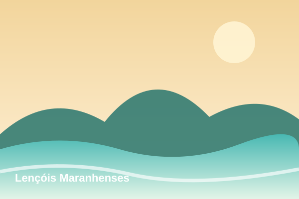

Sobre a Tourly
Acreditamos que viajar muda a gente. Por isso, cuidamos de cada detalhe para que a sua experiência seja inesquecível.
Uma agência feita para quem ama descobrir
A Tourly nasceu da vontade de tornar o planejamento de viagens simples, transparente e prazeroso. Reunimos destinos incríveis do Brasil, pontos turísticos selecionados e uma equipe que escuta antes de sugerir.
Do primeiro contato ao retorno para casa, a nossa missão é uma só: fazer você sentir que a viagem começou no momento em que pensou nela.
Conhecer os destinos
O que guia o nosso trabalho
Cuidado
Tratamos cada viagem como se fosse a nossa. Atenção aos detalhes faz toda a diferença.
Confiança
Informação clara, preços transparentes e parceiros que cumprem o que prometem.
Descoberta
Valorizamos experiências autênticas, que conectam você à cultura e à natureza de cada lugar.

Projeto Integrado DWS + POO + BD
O Tourly é um projeto escolar do 2º TI do Colégio UNASP que integra três disciplinas: Desenvolvimento Web (front-end), Programação Orientada a Objetos (back-end em Python/Flask) e Banco de Dados (MySQL).
- HTML
- CSS
- JavaScript
- Python
- Flask
- MySQL